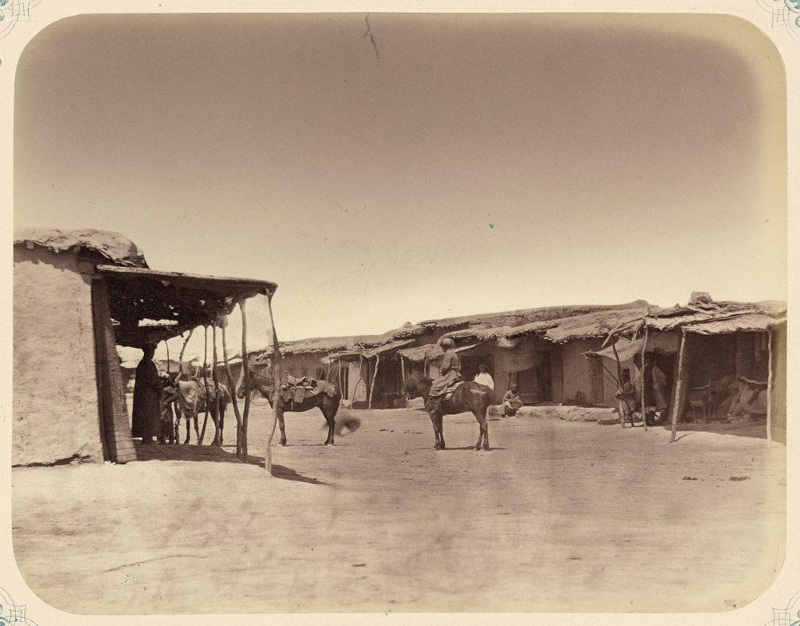
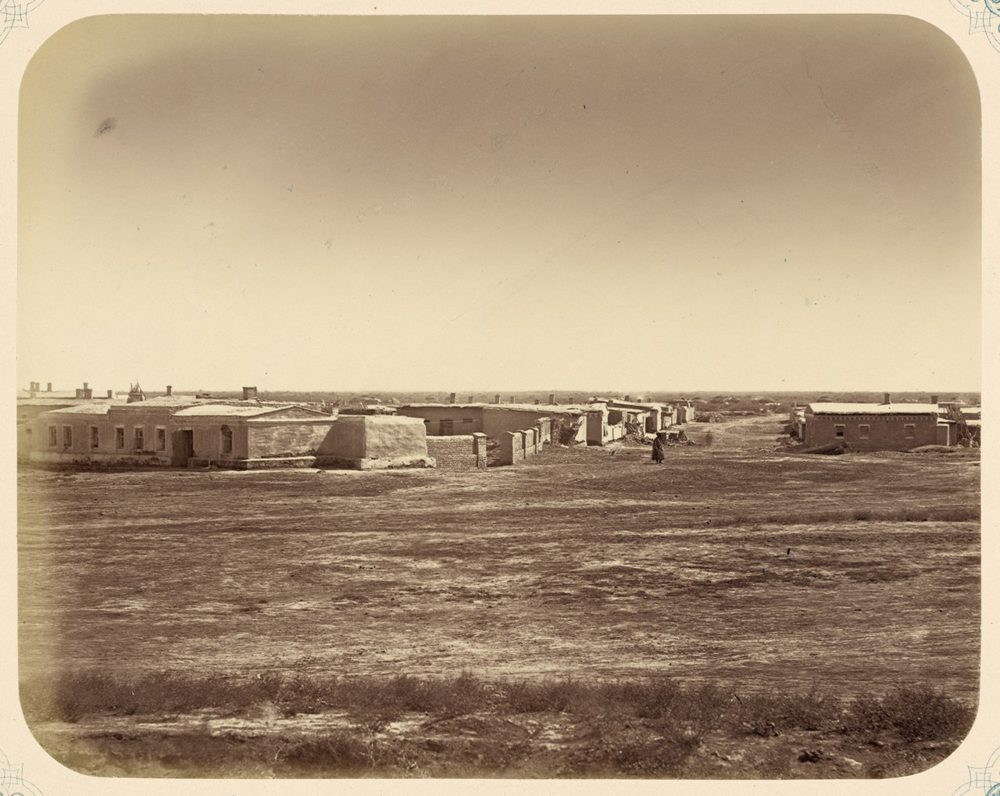
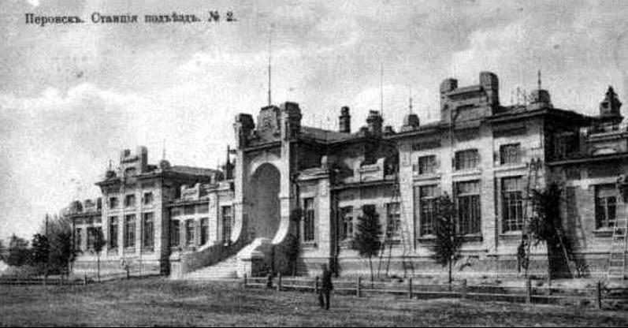
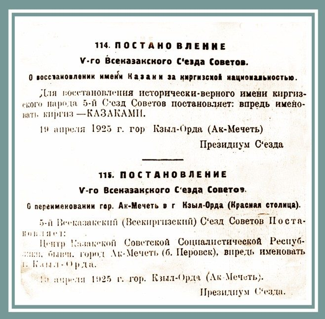

Ақмешіт
Ақмешіт → Перовск
1818 ж. – 1853 ж.
1818 жылы Қоқан хандығы кезеңінде Сырдария бойында бекініс ретінде қаланды. Ақмешіт – жергілікті-тарихи және діни атау.
«Кеңестік топонимдерден ұлттық атауларға көшу: Қызылорда қаласы бойынша»

Ақмешіт → Перовск
1818 ж. – 1853 ж.
1818 жылы Қоқан хандығы кезеңінде Сырдария бойында бекініс ретінде қаланды. Ақмешіт – жергілікті-тарихи және діни атау.

Перовск → Ақмешіт
1853 ж. – 1922 ж.
1853 жылы генерал В.А. Перовский әскерлері бекіністі басып алғаннан кейін қалаға империялық әкімшілік-саяси атау берілді. 1922 жылы тарихи Ақмешіт атауы қайтарылды.

Ақмешіт → Қызылорда
1922 ж. – 1925 ж.
1925 жылы қала Қазақ АССР-інің астанасы ретінде Қызылорда деп аталды. Тәуелсіздік жылдары – ұлттық тарихи сананы жаңғырту, тарихи атауларды қалпына келтіру кезеңі.
Қармақшы ауданы
Энгельс колхозы → Дүр Оңғар ауылы
Ескі атау: Ф. Энгельс – неміс философы, марксизм негізін қалаушылардың бірі.
Қазалы ауданы
Энгельс кеңшары → Қожабақы ауылымен байланысты
Ескі атау: Ф. Энгельс – неміс философы, марксизм негізін қалаушылардың бірі.
Жалағаш ауданы, Қаракеткен
Карл Маркс көшесі → Әуелбек Қоңыратбаев көшесі (2023 ж.)
Ескі атау: К. Маркс – неміс философы, коммунистік идеологияның негізін салушы.
Жалағаш
Калинин көшесі → Бұқарбай батыр көшесі
Ескі атау: М.И. Калинин – кеңес мемлекет қайраткері.
Шиелі кенті
Фрунзе көшесі → Тілеген Шопашев көшесі
Ескі атау: М.В. Фрунзе – кеңес әскери қайраткері.
Қызылжарма
Фрунзе көшесі → Алтықұлаш көшесі
Ескі атау: М.В. Фрунзе – кеңес әскери қайраткері.
Қазалы
Карл Маркс көшесі → Ереш Тілеубаев / Жеңістің 40 жылдығы
Ескі атау: К. Маркс – неміс философы, коммунистік идеологияның негізін салушы.
Қызылорда қаласы аумағында 1279 көше бар: 830-ы қалада, 449-ы ауылдық округтерде. Қаладағы 830 көшенің 489-ы кісі есімімен, 223-і тарихи жер-су атауларымен, 118-і шартты атаулармен аталған.
